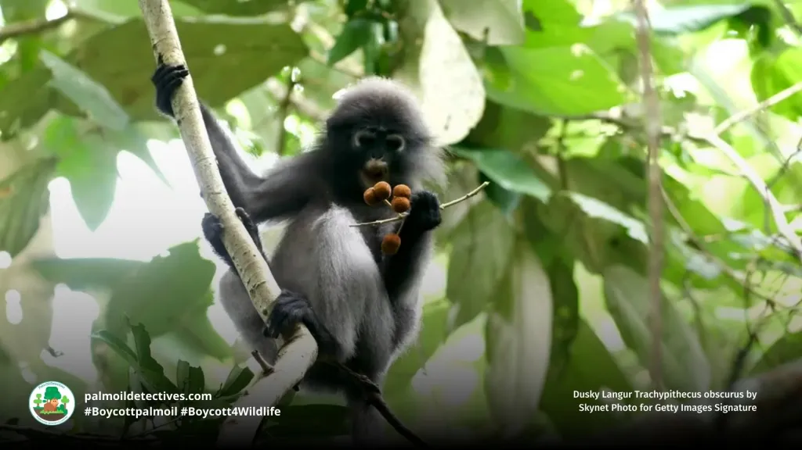

About the Dusky Leaf Monkey
The dusky leaf monkey, also known as the spectacled langur or spectacled leaf monkey (Trachypithecus obscurus), is a primate species in the family Cercopithecidae. These monkeys are easily recognized by the pale rings around their eyes, giving them a "spectacled" appearance. They are native to Malaysia, Burma, and Thailand.
Where Will You Find Them?
You will find the monkeys at the monkey cage near the Monkey Trail.